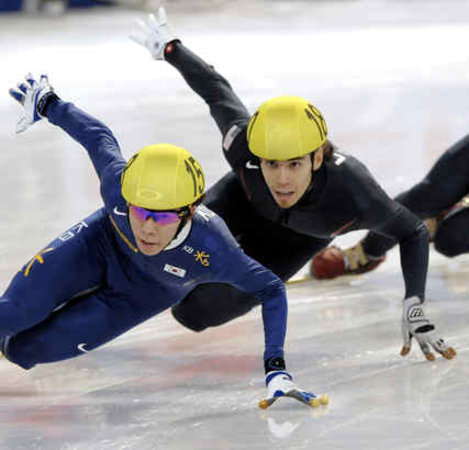
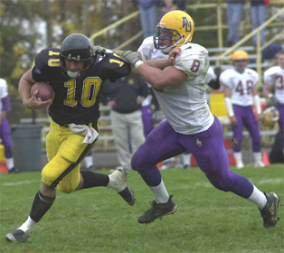

My Current Goals and Dreams
Speed Skating
 I have wanted to try it since the 2002, the Salt Lake City Olympics. Watching Apolo Ohno skate around the track got my heart pumping. It was so cool. So fast. The angles they flew around the turns were incredible. The crashes! Everything so quick paced and self controlled. I wanted to try it. I didn't follow speedskating after the Olympics. I'd occasionally tell Mom I thought it was cool but we never did anything about it. Apolo was on Dancing with the Stars and ended up winning because he's a champ. Then came 2006 Torino Olympics and I saw skating again and loved it even more. I wanted to try it so bad. Told Mom she kind of brushed me off, no big deal. I stopped but skating was always in my head. Before the 2010 Vancouver games I was really looking forward to the speed skating. I watched every race. I watched Apolo's 4 for 4 medal count get shortened to 3 for 4 after he was wrongfully disqualified and I was heart broken. It was then that I knew I needed to try it. So I went online and found West Michigan Speed Skating. Eventually forgot all about it. In 2011 I started working out. I got leaner than I had been in a long time. 180lbs and 6'2". Over the summer in 2011 I went to my first ever speed skating camp and got the biggest workout ever but loved every second. I could barely walk at the end of that weekend but it was the most amazing weekend of my life. I was going to start skating in September but I got hit by the boat and it was put on hold until mid December. A couple more weeks and I'll be skating. I can't wait.
Football

I am deeply regretting quitting football in 5th grade. I love football. Especially because of Andy. But when I go to college I intend to try to walk
on and tryout for the football team. Even if its just scout team at first. I just want to play some football. If I go to Tech I think I have a pretty
good chance of at least making scout team. I was going to play Senior year in high school but I couldn't afford to take that long of work off. But if I
go up to Tech, I won't be working at the Rainbow and all will be well.
Some Good Youtube Videos
Greg Jennings Highlights Marshawn Lynch Great Run You and Austin Ping Pong The Man With a Gun For An Arm Denard Robinson Highlights Best Game Ever Seen (Day before you got hit by a boat) We're Michigan. Howard and Woodson Great Song
Quote
"If I have given it my all and still do not win, I haven't lost. Others might remember winning or losing; I remember the journey" -Apolo Ohno
Good Books You've Read (Although You Don't Read Much)
- Apolo Ohno: Zero Regrets
- Harry Potter:
- Sorcerer's Stone
- Chamber Of Secrets
- Prizoner of Azkaban
- Goblet of Fire
- Order of the Pheonix
- Half Blood Prince
- Deathly Hallows
- Enders Game
Yes, I am a Die Hard Michigan Fan
| Name | Team, Position, # | Information |
|---|---|---|
| Desmond Howard | Michigan Wolverines Football, WR, 21 | Desmond Howard won the Heisman in 1991, wore the 21. I wish I had been born to watch him play. Watching Film of him is intoxicating. He catches the impossible. |
| Charles Woodson | Michigan Wolverine Football, WR/CB, 2 | Charles Woodson won the Heisman in 1997, the year U-M was the National Champions. Charles Woodson made so many great interceptions. The guy was a machine. |
| Braylon Edwards | Michigan Wolverines Football, WR, 1 | Braylon Edwards wore the Legendary Number 1. Only the greats of Michigan Football get the honor and Braylon was one of them. He was a great Wide Out and played in the heartbreaking Rose Bowl loss to USC in 2004. Edwards's Senior Year he received the Fred Biletnikoff Award given to the nation's top wide receiver and was named the Big Ten Conference MVP. |
| Mike Hart | Michigan Wolverines Football, HB, 20 | Mike Hart was amazing. He was easily one of the best running backs at U-M. Hart set a Michigan record for most rushing yards in a season by a freshman with 1,455. In his career, Hart rushed 1,015 times for 5,040 yards; both marks are school records. His 41 career rushing touchdowns are third-best in Michigan annals. Hart's 28 career games with at least 100 yards rushing and five games with at least 200 yards rushing are each the most in Michigan history. Hart lost just three fumbles in his college career, two of which came in his last game as a Wolverine in the 2008 Capital One Bowl. In that game, Hart also passed the 5,000 yard rushing mark for his career, becoming only the fourth player in Big Ten history to do so. |
| Denard Robinson | Michigan Wolverines, QB, 16 | "Shoelace" He's explosive, watching him run is intoxicating. Most rushing yards in the NCAA in 2010. One of the most explosive Quarterbacks ever to play College football. One of my favorite people in the world simply because he can run like no other. No one can stop him. People under rank his throwing ability but as a Junior he has more passing touchdowns than Tom Brady who is one of the best passers ever to play in the NFL. I expect there is a lot more to come out of Denard Robinson. |